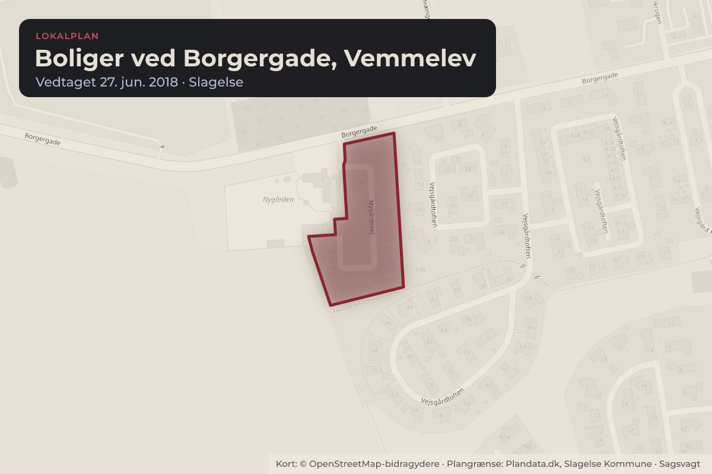
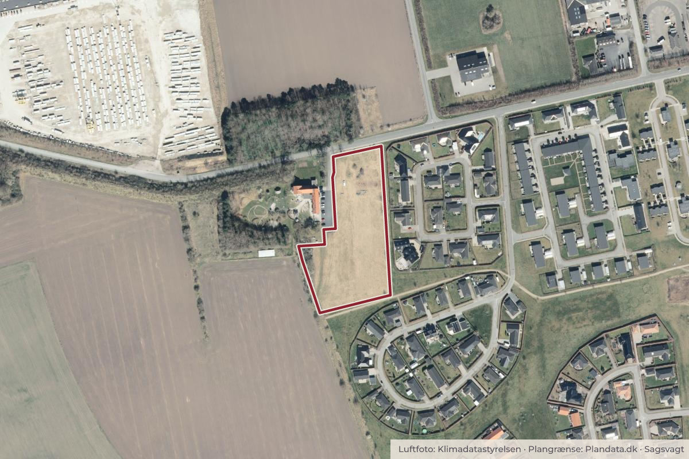

Besluttet 1. september, Erhvervs-, Udviklings- og Landdistriktsudvalget, Slagelse
Anmodning om ændring af Lokalplan 1195, Boliger ved Borgergade i Vemmelev (B)
Chefen for Teknik, Plan og Erhverv indstiller, 1. at Erhvervs-, Udviklings- og Landdistriktsudvalget beslutter, at lokalplanen sættes i gang som en lokalplan af mindre betydning i planlovens forstand.
BoligerByggeri og lokalplanerErhverv og job

Kort: © OpenStreetMap-bidragydere. Plangrænse: Plandata.dk, Slagelse Kommune.

Har du et billede fra Boliger ved Borgergade, Vemmelev? Send det til os
Kort fortalt
- Forslaget
- Erhvervs-, Udviklings- og Landdistriktsudvalget beslutter, at lokalplanen sættes i gang
- Hvem
- Erhvervs-, Udviklings- og Landdistriktsudvalget, Slagelse Kommune
- Hvornår
- Tirsdag 1. september 2026
- Status
- Besluttet. At 1: Ikke godkendt. Udvalget besluttede, at administrationen optager dialog med projektejer med henblik på afdækning af regnvandshåndteringen, jf. administrationsgrundlagt for regnvandshåndtering, samt at boligerne i projekterne svarer til gennemsnitlig størrelse á Sagen genoptages, inkl. administrationens bemærkninger, når dialogen er gennemført.
Læs hele sagen Kommunens egen tekst
Sagsfremstilling
Kompetence
Erhvervs-, Udviklings- og Landdistriktsudvalget
Beslutningstema
Erhvervs-, Udviklings- og Landdistriktsudvalget kan beslutte, om en lokalplan for tæt-lav boliger
ved Borgergade i Vemmelev skal sættes i gang som en lokalplan af mindre betydning i
planlovens forstand jf. kompetenceplanen.
Planloven giver mulighed for at tilvejebringe lokalplaner af mindre betydning, når der er tale om
mindre justeringer af en gældende lokalplan - i dette tilfælde en mindre justering af
anvendelsesbestemmelsen (§ 3) i den gældende Lokalplan 1195.
Indstilling
Chefen for Teknik, Plan og Erhverv indstiller,
1. at Erhvervs-, Udviklings- og Landdistriktsudvalget beslutter, at lokalplanen sættes i gang
som en lokalplan af mindre betydning i planlovens forstand.
Sagens indhold
Lokalplan 1195, Boliger ved Borgergade Vemmelev er opdelt i hhv. delområde 1 til åben-lav
boligbebyggelse og delområde 2 til tæt-lav boligbebyggelse. Delområde 2 er realiseret, mens
det har vist sig svært at realisere delområde 1 til åben-lav boligbebyggelse.
Bygherre har anmodet om at få ændret anvendelsen for delområde 1 i lokalplan 1195, da der,
ifølge bygherre, er en stigende efterspørgsel på tæt-lav boliger som f.eks. dobbelthuse.
Lokalplananmodningen fremgår af vedlaget bilag 1.
Bygherre vurderer, at etablering af dobbelthuse vil kunne understøtte en øget mobilitet på
boligmarkedet, hvor ældre boligejere får øget mulighed for at fraflytte eksisterende parcelhuse
som efterspørges af børnefamilier.
Bygherre ønsker at få ændret § 3.1 i den gældende lokalplan således at tæt-lav boliger også
bliver en mulighed i delområde 1. Ifølge bygherre vil hver parcelhusgrund kunne konverteres til
et dobbelthus med to boligenheder.
Ændringen vil ikke få nævneværdig betydning for boligområdets overordnede struktur idet
adgangsvejen og boligvejen samt det grønne friareal fastholdes. Der skal dog gives vejadgang
til begge boligenheder i dobbelthusene.
Det er bygherres intention, at sikre, at den nye bebyggelse i form af tæt-lav boliger indpasses i
overensstemmelse med den gældende lokalplans eksisterende struktur. Dobbelthusene
ønskes opført med et arkitektonisk udtryk der er i overensstemmelse med eksisterende
bebyggelse inden for lokalplanområdet og efter de arkitektoniske rammer der er fastlagt i den
gældende lokalplan.
Lokalplanområdet ligger inden for bufferzonen til en produktionsvirksomhed, hvor der skal
tages et særligt hensyn til virksomhedens udviklingsmuligheder. Her er der dog tale om en
gældende lokalplan til boligformål, der alene ønskes ændret så der gives mulighed for en
anden boligtype - tæt-lav boliger - som der i øvrigt allerede er mulighed for i lokalplanens
delområde 2. På den baggrund vurderes en ændring af lokalplanen ikke at være i konflikt med
udpegningen af bufferzonen omkring produktionsvirksomheden.
Erhvervs-, Udviklings- og Landdistriktsudvalget kan beslutte at imødekomme
lokalplananmodningen. Det vil betyde, at lokalplanlægningen sættes i gang. Hvis udvalget
beslutter ikke at imødekomme lokalplananmodningen, vil det fortsat være den gældende
Lokalplan 1195 der udgør plangrundlaget for området og der vil ikke være mulighed for at
etablere tæt-lav boliger i lokalplanens delområde 1.
Dobbelthusene skal hver især kunne udstykkes til min 400 m² inkl. fælles friareal. Den enkelte
bolig forventes etableret med tilsvarende størrelse som de eksisterende tæt-lav boliger inden
for lokalplanområdet svarende til et spænd mellem 91 m² og 101 m².
Områdets grønne arealer fastholdes jf. den gældende Lokalplan 1195. Overfladevand skal jf.
den gældende spildevandsplan tilsluttes separatkloakering. Det betyder, at afledning af
regnvand skal reduceres til 2L/s/ha indenfor lokalplanområdet.
Administrationen anbefaler, at lokalplanlægningen sættes i gang som en lokalplan af mindre
betydning i planlovens forstand, da der formentlig alene vil være tale om en tilpasning af
lokalplanens § 3.1, så der også skabes mulighed for tæt-lav boliger i delområde 1.
Retligt grundlag
Lokalplaner tilvejebringes i henhold til planlovens kapitel 5.
Muligheden for tilvejebringelse af lokalplaner af mindre betydning med en reduceret offentlig
høring på 2 uger fremgår af planlovens § 24 stk. 6.
Økonomiske og personalemæssige konsekvenser
Ingen bemærkninger.
Tværgående konsekvenser
Ingen bemærkninger.
Sagens videre forløb
Hvis Erhvervs-, Udviklings- og Landdistriktsudvalget beslutter at igangsætte
lokalplanlægningen, vil Erhvervs-, Udviklings- og Landdistriktsudvalget på et senere tidspunkt
få forelagt et forslag til lokalplan med henblik på en beslutning om at sende lokalplanen i
offentlig høring.
Beslutning
At 1: Ikke godkendt.
Udvalget besluttede, at administrationen optager dialog med projektejer med henblik på
afdækning af regnvandshåndteringen, jf. administrationsgrundlagt for
regnvandshåndtering, samt at boligerne i projekterne svarer til gennemsnitlig størrelse á
Sagen genoptages, inkl. administrationens bemærkninger, når dialogen er gennemført.
Kilde: Slagelse Kommune, Erhvervs-, Udviklings- og Landdistriktsudvalget, referat fra mødet tirsdag 1. september 2026, punkt 4. Læs den originale sag hos kommunen.